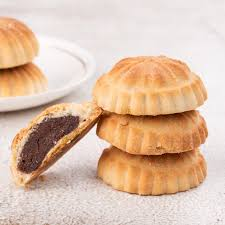

Maamoul Recipe

Ingredients
- 2 cups semolina flour
- 1 cup all-purpose flour
- ½ teaspoon ground mahlab
- ½ teaspoon salt
|
- 1 cup clarified butter, at room temperature
- 5 tablespoons milk
- 2 tablespoons white sugar
- 1 teaspoon active dry yeast
- 4 tablespoons orange blossom water, or more as needed
- 10 tablespoons date paste (such as Ziyad), cut into small pieces
- 2 tablespoons powdered sugar, or to taste